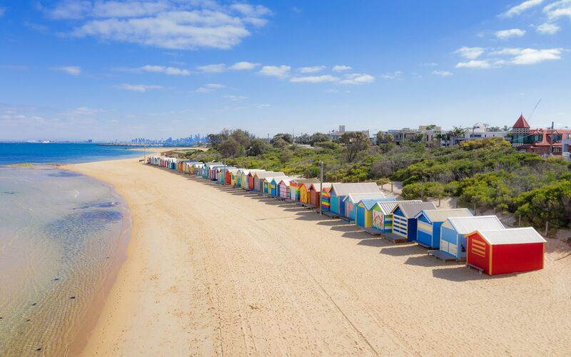
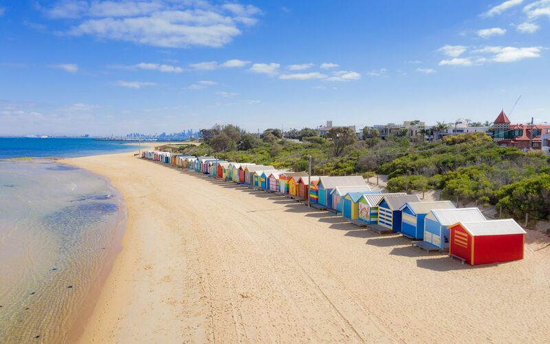

Localização
Melbourne é a capital do estado de Victoria, localizada no sudeste da Austrália, na Oceania. Situada na costa ao longo da Baía de Port Phillip, Melbourne é conhecida por seu clima temperado, com verões quentes e invernos amenos. A cidade também está próxima das Montanhas Dandenong, ao leste, e do Vale Yarra, uma famosa região vinícola. Além disso, Melbourne é atravessada pelo rio Yarra, que contribui para o cenário natural e cultural da cidade.